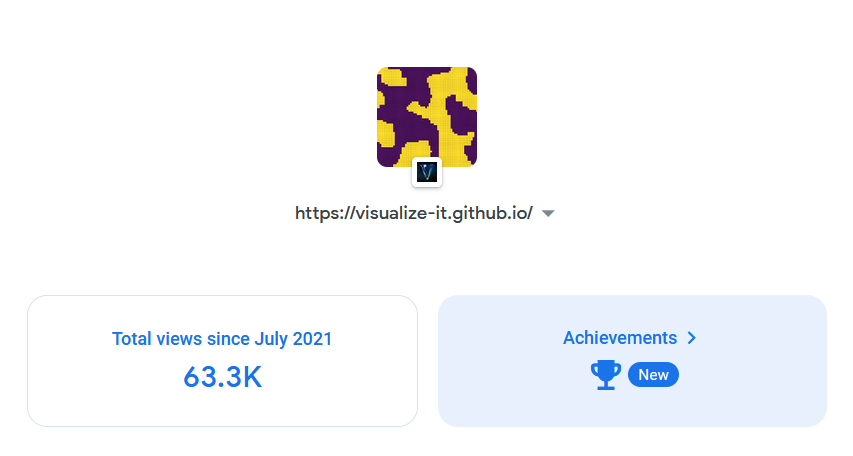

All simulations here were developed by ChanRT. Fork me at GitHub!
Everything has been programmed using vanilla JavaScript.
You are free to use these simulations for educational purposes.
However, an acknowledgement would be great!
Many simulations on this website are inspired from the works of YouTube creators.
To name a few: The Coding Train, Sebastian Lague, Veritasium, 3Blue1Brown, Zach Star, Reducible, Computerphile, Numberphile and many others!
Certain simulations on niche topics were motivated by courses that I took at my university (Indian Institute of Science).
A lot of simulations are under development, and a new one is released every 2-3 weeks or so.
This website was featured in top 100 worldwide of 3Blue1Brown's Summer of Math Exposition II
Spread the word about this website! This website barely gets ~500 views in a week :-(

This is an ONGOING project!
| Topic | Date |
|---|---|
| Porous Percolation | February 12th, 2023 |
| Bernoulli Percolation | February 9th, 2023 |
| Simple Fluid | January 21st, 2023 |
| Fourier Series | January 19th, 2023 |
| Tricritical Directed Percolation | January 18th, 2023 |
| Lotka-Volterra Model | October 10th, 2022 |
| Schelling's Model | July 20th, 2022 |
| Gradient Descent | July 18th, 2022 |
| Firefly Synchronization | June 30th, 2022 |
| Ising Model | June 29th, 2022 |
| Collective Behaviour | June 24th, 2022 |
| Flocking Behaviour (archived*) | June 17th, 2022 |
| Monte Carlo | March 15th, 2022 |
| K-means Clustering | March 15th, 2022 |
| Image Filters | December 4th, 2021 |
| Home Range (archived) | November 29th, 2021 |
| Nuclear Fusion | November 10th, 2021 |
| Sorting Algorithms | October 7th, 2021 |
| Genetic Algorithm | October 4th, 2021 |
| Polynomial Regression | September 20th, 2021 |
| Contact Process | September 19th, 2021 |
| Bezier Curves | September 4th, 2021 |
| Reaction Diffusion | August 24th, 2021 |
| Random Walks | August 22nd, 2021 |
| Maze Generation | August 20th, 2021 |
| Collatz Conjecture (archived) | July 31st, 2021 |
| Prime Counting (archived) | July 23rd, 2021 |
| Hilbert Curve | July 23rd, 2021 |
| Lorenz System | July 21st, 2021 |
| Logistic Map (archived) | May 20th, 2021 |
| Lexical Analysis | May 17th, 2021 |
| Travelling Salesman | May 14th, 2021 |
| Mandelbrot Fractal | March 13th, 2021 |
| Verhulst Model (archived) | March 5th, 2021 |
| Heat Equation (archived) | February 24th, 2021 |
| Conway's Game of Life | February 7th, 2021 |
| Linear Momentum | January 26th, 2021 |
| Linear Transformations | January 23rd, 2021 |
| Conic sections (archived) | January 21st, 2021 |
| Quantum Computing | January 18th, 2021 |
| Special Relativity | January 7th, 2021 |
| Stroboscopic Effect | December 24th, 2020 |
| Planetary Motion | December 15th, 2020 |
| Projectile Motion | December 10th, 2020 |
| Spring Motion | December 9th, 2020 |
| Trigonometric Functions | December 5th, 2020 |
| Repository created | November 25th, 2020 |
*Certain topics here have been archived because they have been covered within an overarching topic (like flocking behaviour is a particular case of collective behaviour, among others). The websites for topics like prime counting, Collatz conjecture and conic sections are not educative enough, to be featured along with others.
If this website gets a larger audience, then I will have greater impetus to work on these topics!
Additionally, if you have any concept(s) in mind that I can simulate,
then please contact me via GitHub, email me at chanrt.visualize@gmail.com or tweet me @_chanrt_
Thanks for visiting!